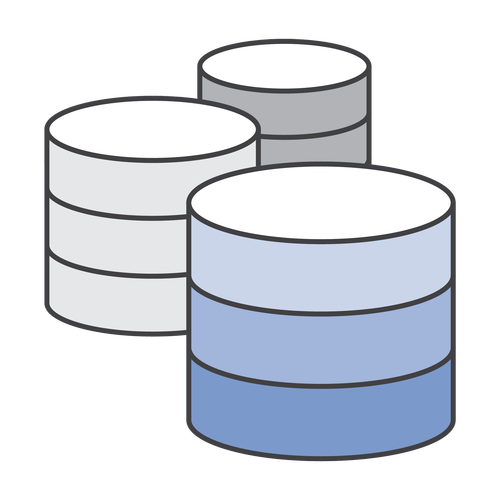
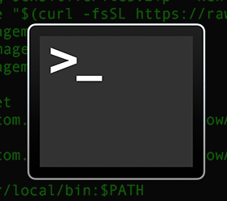
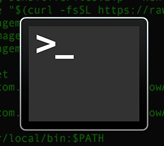

- ELK Stack & Docker -
Dan Clarke
Independent Developer / Contractor
ELK Stack
Agenda
- ELK Stack Overview
- Docker and Containers (with demo)
- Serilog
- ELK Demo
ELK Stack
Elastic Search
Logstash
 

Logstash
Logstash
Kibana
Docker
Containers
- Lightweight
- Disposable
- Seconds to spin up / tear down
- Lifetime is a single process
- Self contained
- Individually deployable / scalable
Images
- Template for containers
- Quite big really!
- Layered
- Cached (per layer)
Docker Hub
Dockerfile
FROM microsoft/aspnetcore
WORKDIR /app
COPY . .
EXPOSE 80
ENTRYPOINT dotnet dockertest.dll
FROM microsoft/aspnetcore
WORKDIR /app
COPY . .
EXPOSE 80
ENTRYPOINT dotnet myapp.dll
FROM ubuntu:14.04
RUN apt-get update
RUN apt-get install -y curl
...
FROM ubuntu:14.04
RUN apt-get update && apt-get install -y curl
...
Docker CLI
docker build . -t <tagname>
docker run -p 1234:80 <image_name>
docker start <container_name>
docker stop <container_name>
docker rm <container_name>
docker kill <container_name>
docker ps -all
CONTAINER ID IMAGE COMMAND CREATED STATUS PORTS NAMES
e8f3c41b8d2c dockerelk_kibana "/bin/bash /usr/lo..." About a minute ago Up About a minute 0.0.0.0:5601->5601/tcp dockerelk_kibana_1
docker push
docker pull
Docker Compose
version: '3'
services:
web:
build: .
ports:
- "1234:80"
api:
image: "MyApi"
ports:
- "5001:80"
mongodb:
image: "mongo"
redis:
image: "redis"
CLI Examples
docker-compose up
docker-compose down
docker-compose build
docker-compose push
docker-compose pull
Docker Demo
Serilog
var obj = new
{
a = "hello",
b = 456
};
var num = 57;
Log.Information("Object: {@obj}, num = {num}", obj, num);
09:14:22 [Information] Object: { a: hello, b: 456 }, num = 57
Log.Logger = new LoggerConfiguration()
.MinimumLevel.Debug()
.WriteTo.LiterateConsole()
.CreateLogger();
Log.Logger = new LoggerConfiguration()
.WriteTo.Elasticsearch(
new ElasticsearchSinkOptions(
new Uri("http://localhost:9200"))
{
AutoRegisterTemplate = true,
}).CreateLogger();
DEMO TIME!
Summary
What have we done?
- Quickly created an MVC app using the dotnet CLI
- Dockerized project using vscode tooling
- Built a release image and pushed to Docker Hub
- Updated the image adding Serilog support
- Very quickly spun up the ELK Stack with Docker
- Created dashboard with graph plotted from LINQPad and logs from our Dockerized MVC app
Preempted Questions...
Would you actually use Serilog for metrics in the real world?

How does this compare to Grafana?
Kubernetes
for .NET developers
Shahid Iqbal